Executive presentations & knowledge exchange
CIO & SVP engagement
Presented AI innovation outcomes to SVP leaders across quality, supply and R&D, and engaged the CIO through global AI forums and TechTalks at Reckitt.
Explore the context →Enterprise AI · Strategy · Products · Leadership
Dr. Joyjit Chatterjee
I lead AI solution development for global enterprises, bringing together business strategy, product thinking and research depth. My work spans R&D, manufacturing and procurement, with senior stakeholder engagement across Europe and North America.
Lead Data Scientist, EPAM Systems
Distinguished Visiting Fellow, Loughborough University
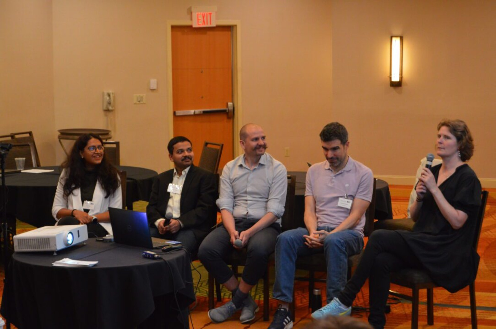
View panel photograph ↗International speaker & panellist
IEA Wind Task 43 · Colorado, 2025
Panellist alongside participants from Microsoft, NREL, Siemens and OST. Pictured second from left.
Executive engagement & industry dialogue
Executive presentations & knowledge exchange
Presented AI innovation outcomes to SVP leaders across quality, supply and R&D, and engaged the CIO through global AI forums and TechTalks at Reckitt.
Explore the context →Invited panellist · 2024
Discussed next-generation AI products alongside industry leaders from Microsoft and Dell.
Explore the context →Speaker · 2024
Presented AI for process verification to senior quality leaders from Unilever, ELC Europe, Sanofi, Haleon, Galderma and Kenvue.
Explore the context →01 / Enterprise AI
Shaping AI opportunities, building products and helping organisations use them. Work spanning R&D, manufacturing, procurement and supply.
Contributed to a GenAI negotiation intelligence platform for a global consumer goods company. Evaluation demonstrated savings potential equivalent to 2% of annual procurement spend.
Up to £300k per year demonstrated in evaluation of predictive analytics for continued process verification at Reckitt.
Approximately $780k and 10,000 lab hours per year demonstrated in evaluation of AI-assisted shelf-life prediction.
Contributed to waste reduction in major UK factories through data-led continuous improvement and manufacturing analytics.
Certificate of Excellence for the Reckitt–University of Hull Knowledge Transfer Partnership.
Financial figures describe annual business cases assessed in evaluations. Open each figure for scope and contribution.
Stakeholder perspectives
Anonymised summaries of feedback shared by senior stakeholders and collaborators. Individual perspectives, with names, client identities and project details omitted.
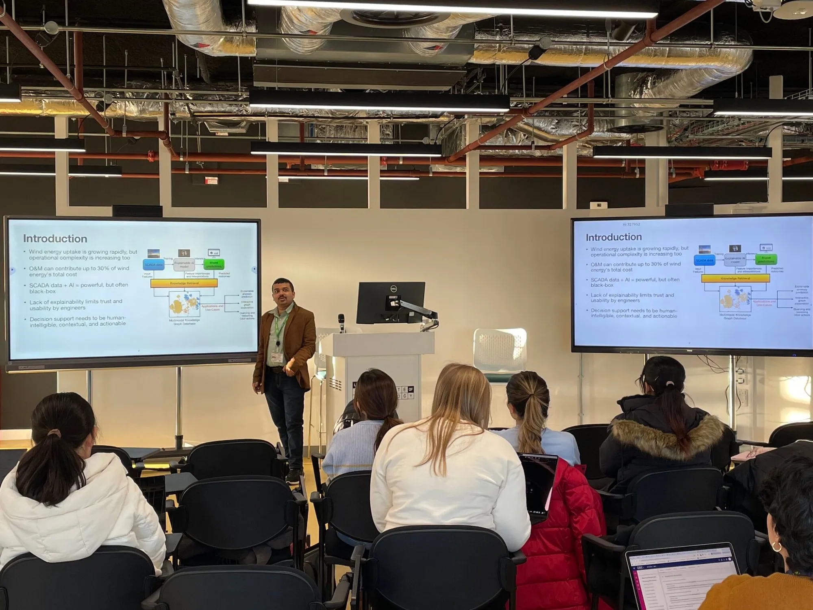
View speaking photograph ↗Generative AI, knowledge graphs and industrial decision support.
Credibility with senior stakeholders
Recognised for strong support across strategic pursuits, confidence in senior business discussions and credibility as a client-facing subject-matter expert.
VP, Business Development, EPAM
Strategy, clarity and collaboration
Commended for shaping reusable assets, translating complex solutions into clear client presentations, building confidence in the team’s capabilities and taking a proactive, collaborative approach.
Director, Project Management, EPAM
Ownership and dependable delivery
Described as highly dependable and dedicated, consistently exceeding expectations, taking full ownership of responsibilities and proactively addressing challenges to deliver commitments on time.
IT&D Product Manager at Global CPG company
Mentorship and rigorous thinking
Recognised for deep AI knowledge, applying academic rigour to business problems, mentoring colleagues and working effectively across stakeholders to help the team achieve its goals.
Former senior colleague, EPAM
Leadership across research and industry
Described as self-directed and reliable, combining practical AI expertise with original thinking, strong leadership skills and the ability to communicate complex ideas across technical and business audiences.
Professor, Loughborough University
02 / Recognition & contribution
International recognition, invited academic service and contribution to the wider AI community.
Enterprise leadership
Finalist: Data Leader of the Year (Partner).
View details ↗Independent recognition
Manufacturing & Industry, 2022. Recognition for AI work in manufacturing and energy.
View details ↗Academic judgement
Invited expert on a Doctoral Examination (Aptitude Colloquium) committee.
View details ↗Research into impact
Distinguished Visiting Fellow, contributing to research embedding and industry impact.
View details ↗Innovation evaluation
External evaluator and reviewer for Horizon Europe’s NGI Search project, 2023.
View details ↗Sustainability research
One of 25 international awardees selected by Germany’s Federal Ministry of Education and Research in 2021.
View details ↗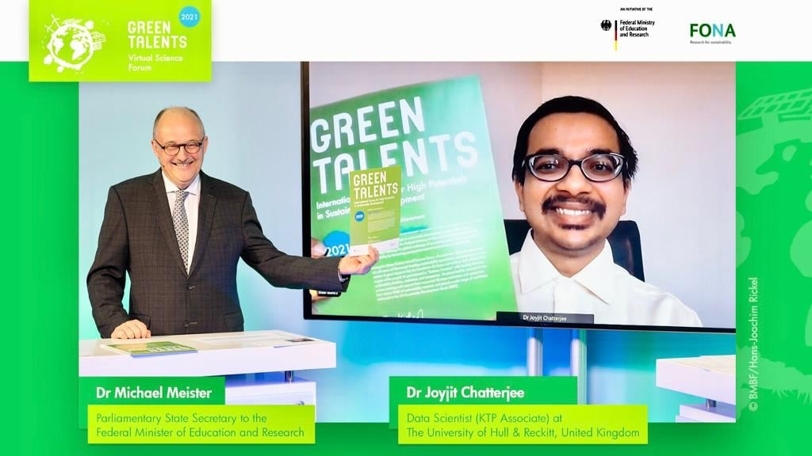
Enlarge image ↗2021
The virtual Green Talents award ceremony with Parliamentary State Secretary Michael Meister. Joyjit appears remotely on screen. Image credit: BMBF / Hans-Joachim Rickel.
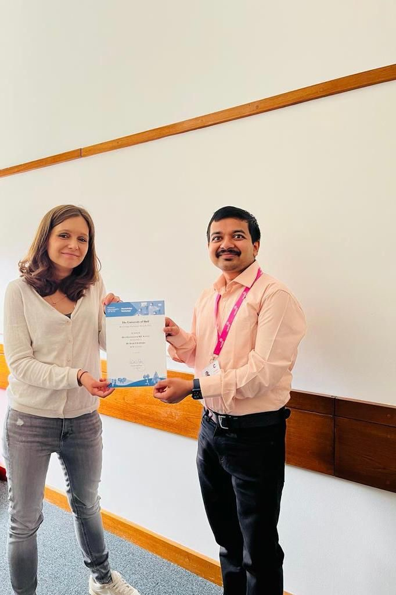
Enlarge image ↗2023
Receiving the University of Hull’s Best International Knowledge Exchange Activity award for KTP activity.
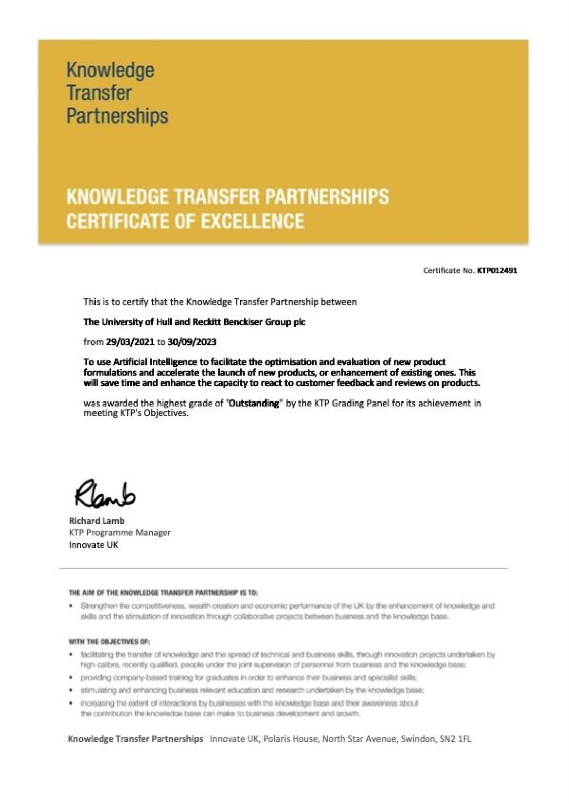
View certificate ↗Reckitt × University of Hull
The Knowledge Transfer Partnership received Innovate UK’s Certificate of Excellence with the highest grade, Outstanding. My work connected AI research with practical R&D and manufacturing challenges at Reckitt.
Project completed in 2023. Certificate shared in February 2024.
View the recognition ↗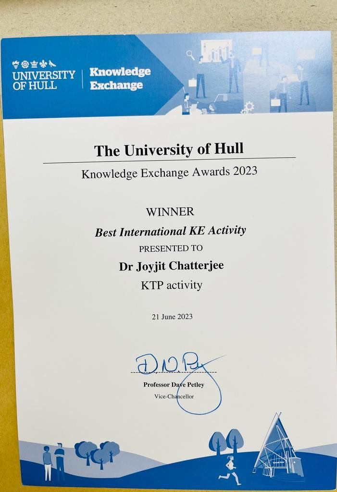
View award ↗University of Hull award for global collaborations and impact in the KTP project
Recognition details →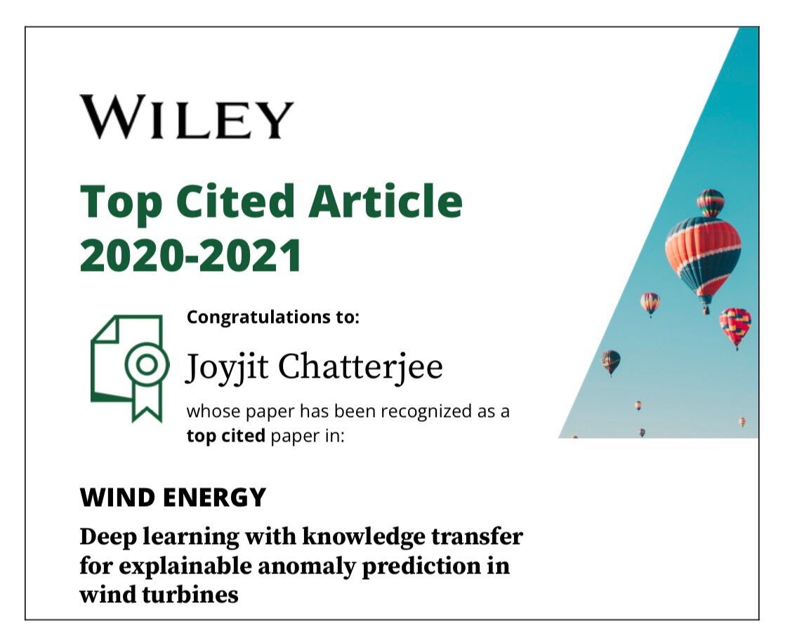
View award ↗Wiley Top-Cited Article recognition for 2020–2021 in the Wind Energy journal.
Recognition details →Endorsed as Global Talent by UK Research and Innovation (UKRI).
Recognition details →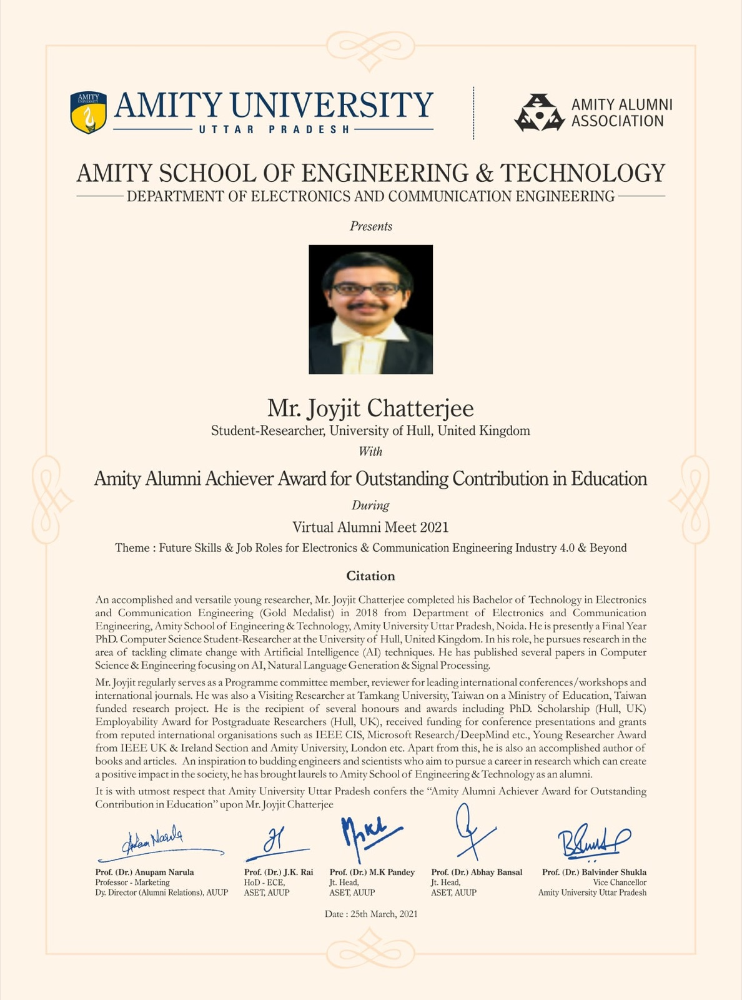
View award ↗Awarded by Amity University for Outstanding Contribution in Education.
Recognition details →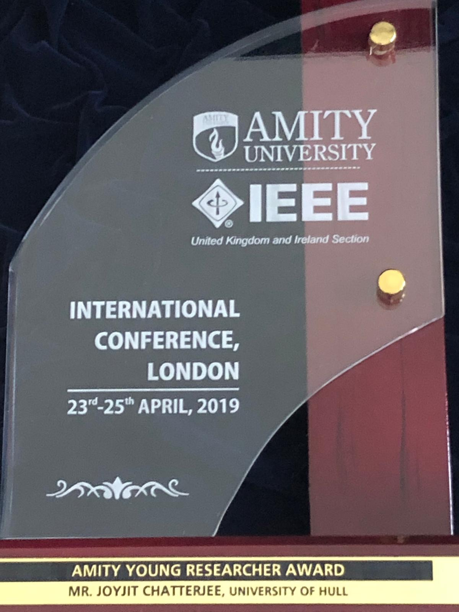
View award ↗Amity Young Researcher Award, recognising early-career research contributions.
Recognition details →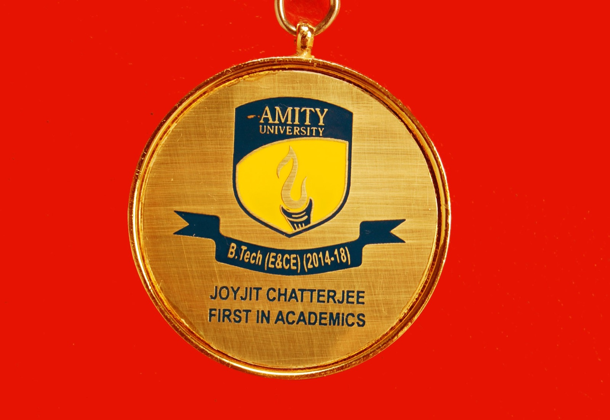
View award ↗Gold medallist and first in the B.Tech Electronics & Communication Engineering programme at Amity University, with 9.68/10 CGPA.
Recognition details →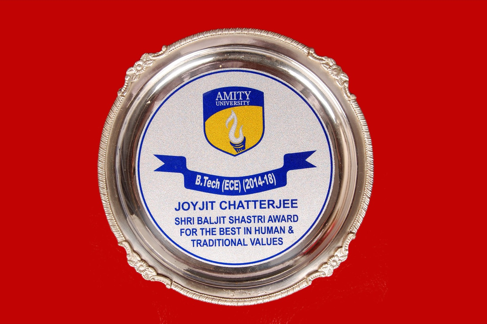
View award ↗Most coveted award of Amity University for Best in Human and Traditional Values
Recognition details →Business, product & leadership development
Cambridge business CPD · Oxford AI Programme · Professional Agile Leadership · AI for Product Management
03 / In the public conversation
Recorded talks, interviews, published perspectives and profiles. Explore the work in my own words and through the organisations that feature it.
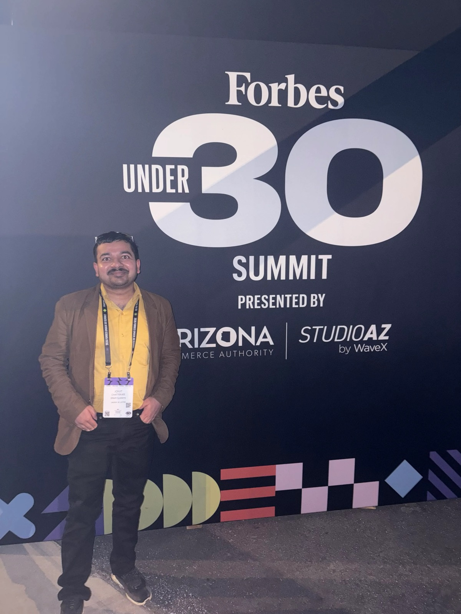
Explore ↗Recognition · Forbes
2022
Recognised in Manufacturing & Industry for AI work in manufacturing and energy. Photo: at the 2026 Under 30 Summit in Phoenix.
Read the Forbes profile ↗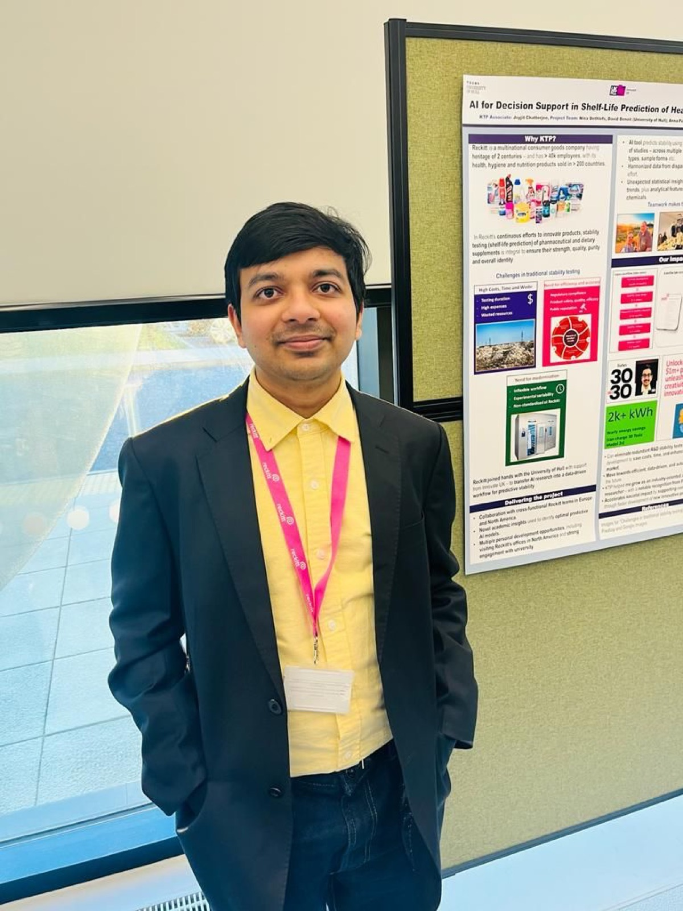
Explore ↗Alumni feature · University of Hull
Apr 2025
The university highlights my doctoral research, highly cited publications, Forbes recognition and journey through KTP work to EPAM. Photograph: presenting the KTP project in March 2023.
Read Hull’s feature ↗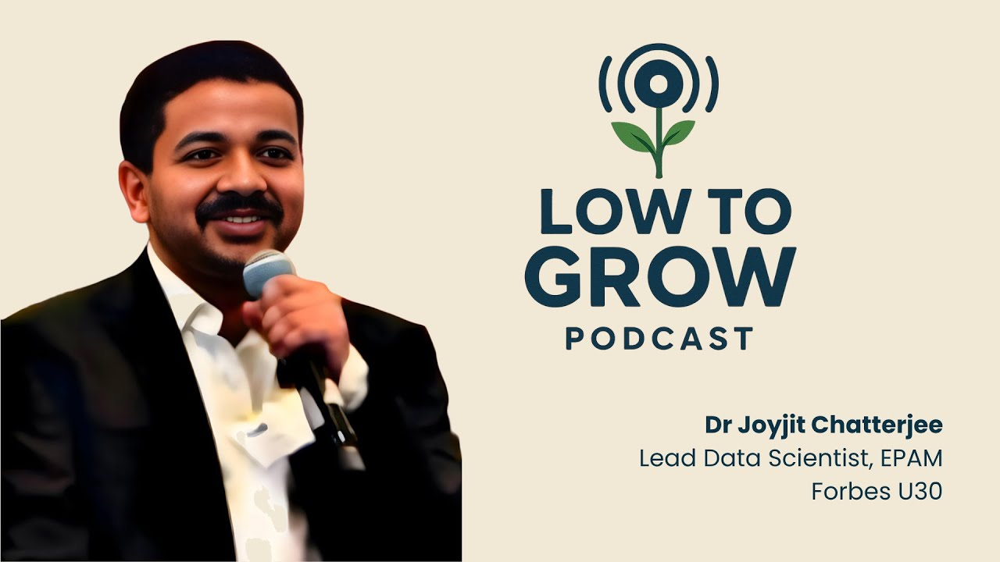
▶ WatchPodcast · Low to Grow
Nov 2025
A conversation with Wenmiao Yu on explainable AI, practical enterprise adoption and reflective leadership.
Listen to the episode ↗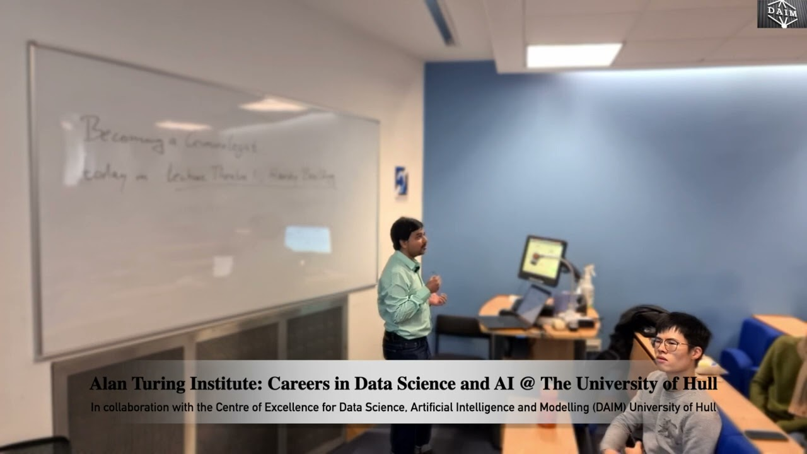
▶ WatchRecorded talk · Hull / Alan Turing Institute
Recording published Dec 2024
Sharing my career journey and perspective on working in data science and AI, at the University of Hull.
Watch the talk ↗Recorded presentation · IEA Wind Task 43
11 Jun 2025
Research presentation on maintenance decision support, alongside participation in the meeting’s generative AI panel.
Watch the presentation ↗Interview · IEEE Spectrum
Jun 2022
Contributing a research perspective on trust, data and the practical use of AI in renewable energy.
Read the interview ↗Coauthored perspective · World Economic Forum
Apr 2022
With Nina Dethlefs, on the unequal global adoption of AI. Originally published by The Conversation and republished by the World Economic Forum.
Read the article ↗Profile · Education Times
Jul 2021
A profile of my research in applying AI to energy and climate challenges.
Read the profile ↗Research film · Green Talents
2021
My research introduction for the German government’s Green Talents award, on trustworthy AI for wind energy.
Watch the introduction ↗Research poster · WindEurope
2026
Coauthored research for WindEurope 2026. The poster was presented by collaborator Idris Alugo, as credited by the Loughborough research group.
Read the research poster ↗Coauthored commentary · Economic Times
17 Apr 2022
With Nina Dethlefs, on the consequences of unequal AI adoption. Republished by Economic Times / ETAuto.
Read the commentary ↗04 / Research & authorship
Research with reach
Explainable AI, industrial decision support and the energy transition.
Explore Google Scholar ↗Snapshot: 3 November 2026. *2026 is a partial year.
Google Scholar citation counts, observed 3 November 2026.
40,151 ResearchGate reads ↗, observed 3 November 2026. Reads include views of publication summaries, figures and full texts or downloads, not unique readers.
The h-index is the number of papers with at least that many citations. The i10-index counts papers with at least ten citations. Platforms have different coverage; their figures are not combined.
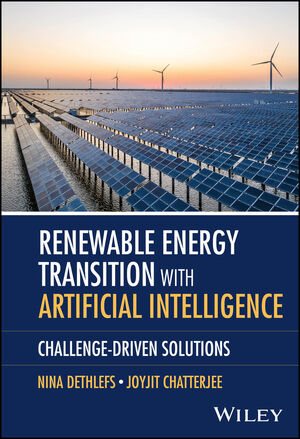
Co-editor with Nina Dethlefs · Wiley · 2025
Challenge-driven Solutions
Bringing academic and industry perspectives together on AI for the energy transition. I co-edited the volume and coauthored its opening chapter on operational, engineering and socioeconomic adoption challenges.
Explore at Wiley ↗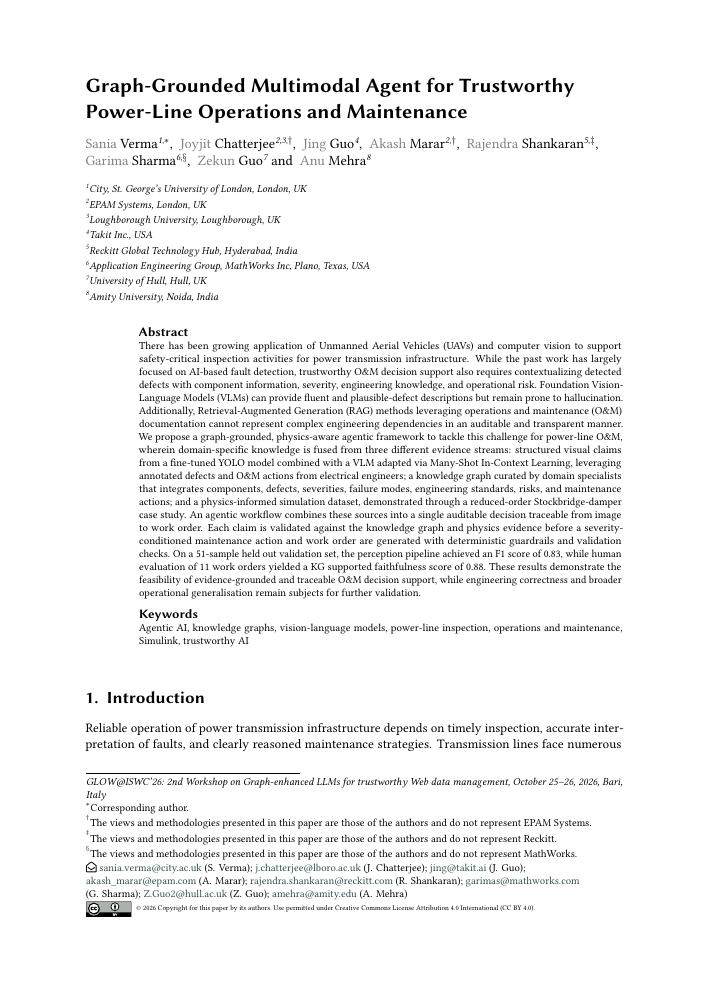
Latest paper · GLOW at ISWC 2026Read the full paper ↗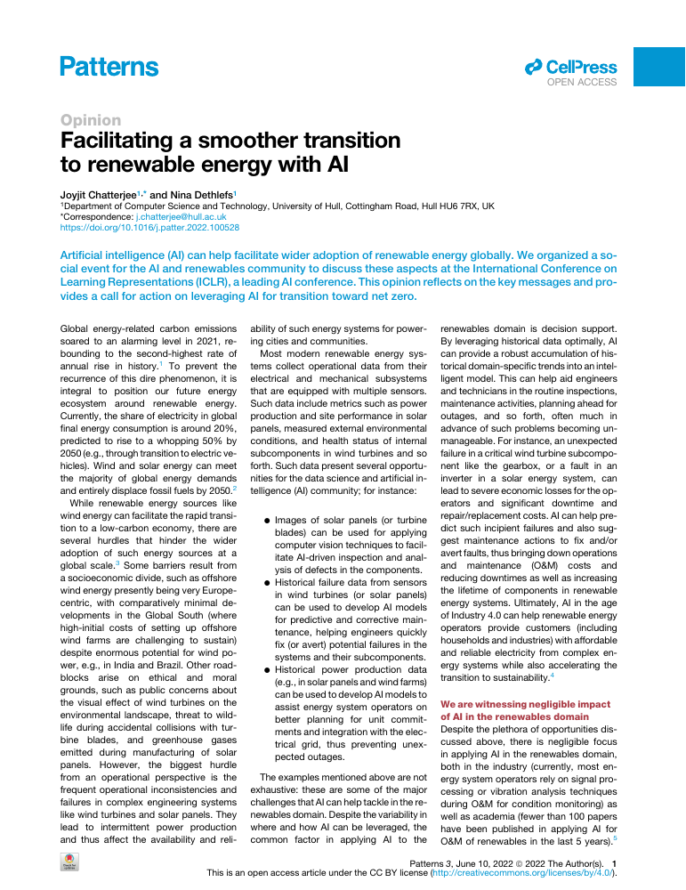
journal · Jun 2022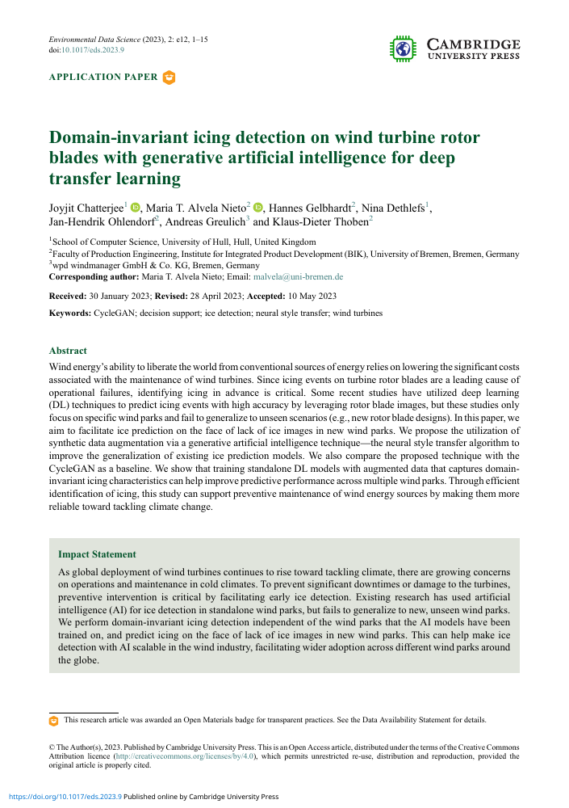
journal · Jun 2023conference · Oct 2026
GLOW workshop at ISWC, Bari, Italy
conference · May 2026
ABIS workshop at ACM Web Science 2026; ACM Web Science Conference Companion
05 / In the room
Invited panels, executive roundtables and international talks connecting AI products, industrial operations and trustworthy innovation.
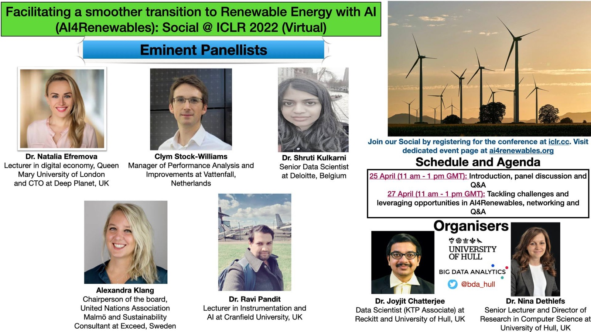
View programme ↗Research community leadership
Co-organised the two-day “Facilitating a smoother transition to Renewable Energy with AI” social, bringing together an industry–academic expert panel and a research community event.
Oct 2024
CXO Group Roundtable Discussion (with Microsoft and Dell)
2024
With Bosch, Lindt, Infineon Technologies, SFS Group etc.
2024
FMCG CQO Roundtable (Unilever, Sanofi, Haleon, Galderma, Kenvue etc.)
11 Jun 2025
IEA Wind Task 43 AGM + Technical Expert Meeting, Golden, Colorado, USA
Apr 2020
Carnegie Mellon University (CMU) Symposium on AI and Social Good
Full event record →Apr 2024
Global QC Excellence Forum at Reckitt
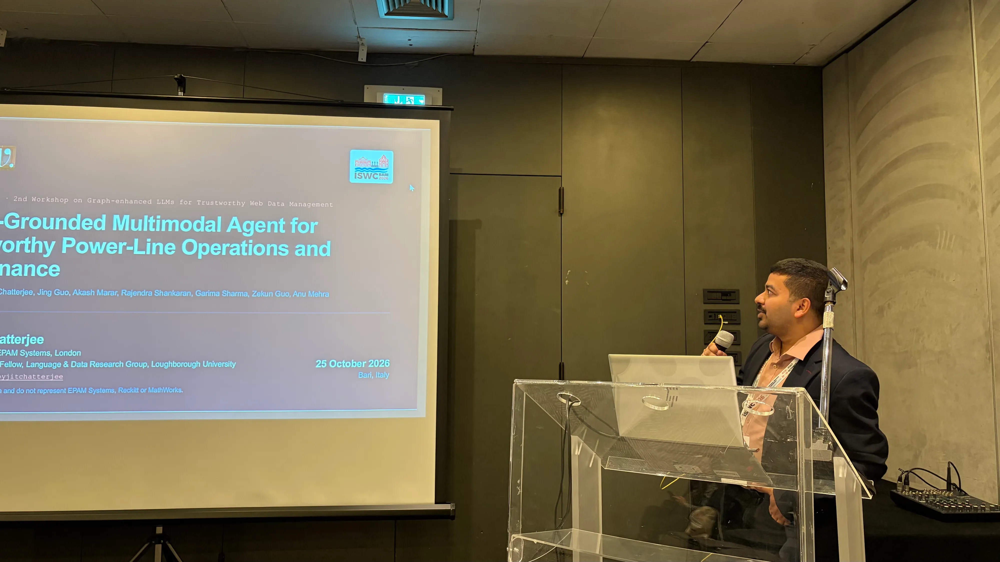
View photo ↗25 Oct 2026
Presenting research on a graph-grounded multimodal agent for trustworthy power-line operations and maintenance at the GLOW workshop, ISWC 2026, Bari.
Original post / source ↗Apr 2026
At the Forbes Under 30 Summit in Phoenix, Arizona, as a Forbes 30 Under 30 Europe lister.
Original post / source ↗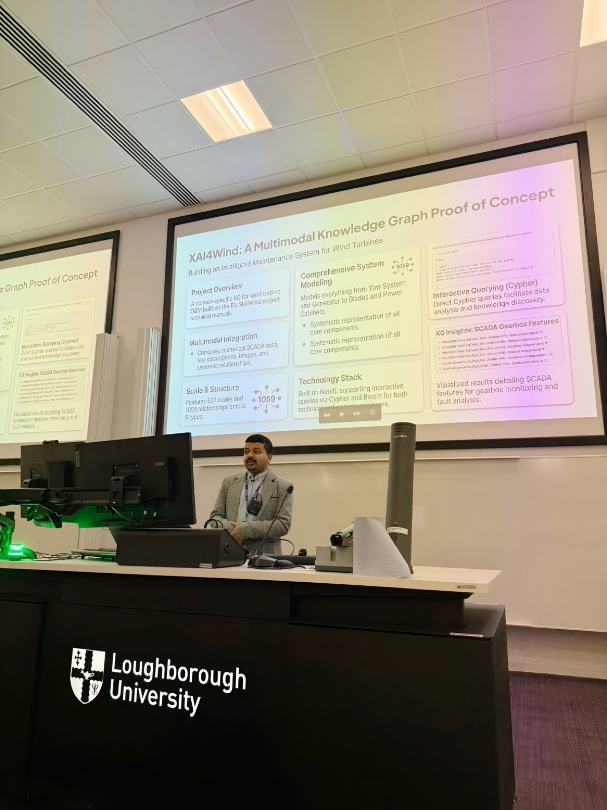
View photo ↗5 Mar 2026
A guest lecture at Loughborough University on knowledge representation and reasoning for safety-critical engineering.
Original post / source ↗19 Oct 2026
An invited guest at a House of Lords evidence session on the legal and ethical frameworks for autonomous vehicle technology.
Original post / source ↗Nov 2025
An invited talk for Queen Mary University of London on generative AI, knowledge graphs and Wind Task 43, at the London City Institute of Technology campus.
Original post / source ↗11 Jun 2025
A panel discussion at the IEA Wind Task 43 Annual General Meeting in Golden, Colorado, alongside participants from Microsoft, NREL, Siemens and OST. Photograph: IEA Wind Task 43.
Original post / source ↗7 Mar 2023
Sharing AI shelf-life prediction research at the Hull KTP celebration, Aura Innovation Centre, March 2023. Joyjit Chatterjee, via LinkedIn.
Original post / source ↗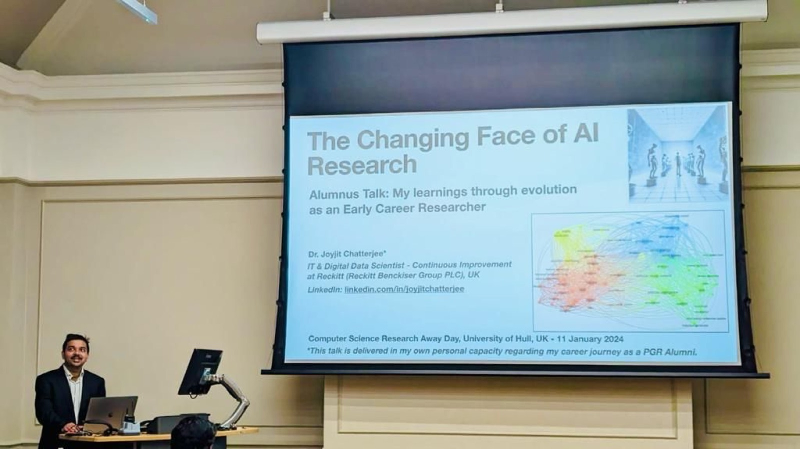
View photo ↗11 Jan 2024
Delivering an invited Distinguished Alumni Talk at the University of Hull, 11 January 2024. Photos credited in Joyjit’s post to Nina Dethlefs and Koorosh Aslansefat.
Original post / source ↗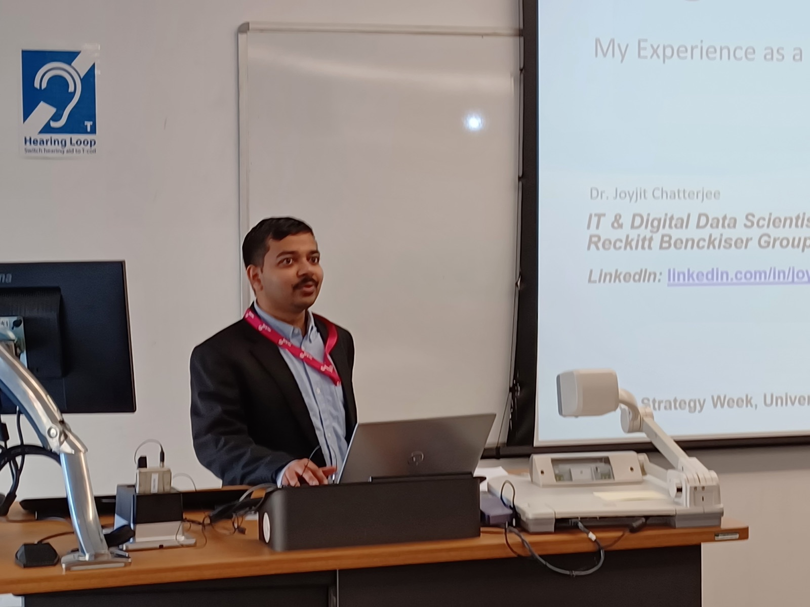
View photo ↗11 Oct 2024
Speaking at the University of Hull’s Research and Knowledge Exchange Strategy Week about my experience as a KTP Associate alumnus.
From my personal archiveEnterprise adoption, trustworthy systems, industrial applications and the journey from research to delivery.